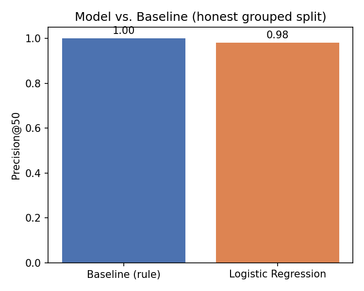
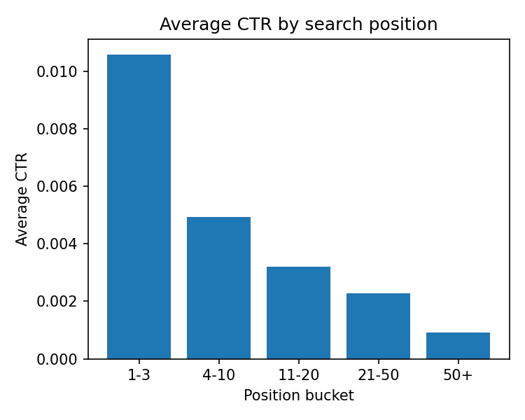
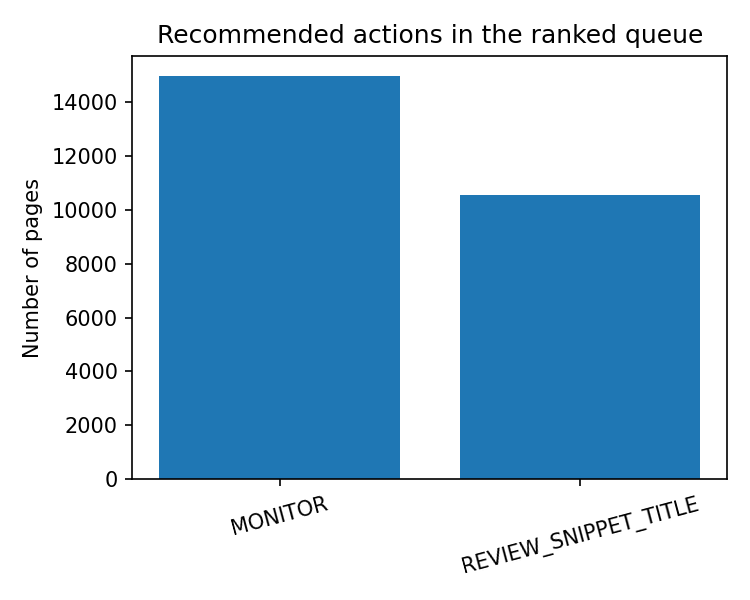

CTR and Engagement Opportunity Scoring
Ranking search-visible pages for human review using search visibility and engagement signals
Abstract
This study investigates whether pages with search visibility can be ranked for human review when they appear to under-capture clicks relative to their search position. Using the FlyRank internship warehouse, March 2026 search and engagement data were aggregated to the page level and evaluated using a transparent rule-based baseline and Logistic Regression. The model was evaluated using a grouped-by-client 70/30 split, with 32 clients in training and 15 held-out clients, and achieved a Precision@50 of 0.98 compared with 1.00 for the baseline on the same test set. The results show that the simple CTR and position-based rule already captures most of the signal represented by the current underperformance proxy, while Logistic Regression provides a comparable ranking for decision-support. These findings are descriptive and directional rather than causal, and the resulting queue is intended to prioritize human review rather than automatically change content.
1. Introduction / Problem
Content and SEO teams often have more pages to review than they have time to inspect manually. This project focuses on a practical prioritization question: among pages that have search visibility, which ones appear to capture fewer clicks than expected for their search position?
The goal is not to prove why a page performs poorly or to predict Google's ranking algorithm. Instead, the goal is to create a ranked review queue that helps a content editor or SEO specialist decide where to look first.
The output is therefore decision-support. A flagged page is a candidate for human investigation of its title, description, snippet, relevance, or surrounding context.
2. Data
The analysis uses the FlyRank internship warehouse hosted on Hugging Face, specifically the
fact_content_daily_performance table.
The analysis window is March 1–31, 2026.
The source table is at page-client-day grain.
The March partition contains 9,841,378 page-day rows, with no duplicate
(client_hash_id, content_hash_id, date) keys in the verified grain check.
After filtering to rows with available GSC data and positive impressions and aggregating daily observations across the month, the analysis contains 176,738 pages across 47 clients.
Only approximately 36.7% of page-day rows have
gsc_data_available = TRUE.
Therefore, the findings apply to pages represented by available GSC data during this analysis window rather than to the complete underlying page population.
AI-referral fields were excluded because they belong to a different analysis lane. Click and impression totals were used to calculate CTR and the target definition but were not used as model features because doing so would create leakage.
3. Methodology
Target
The target, is_underperforming, is a proxy rather than a direct business outcome.
A page is labeled underperforming when its CTR is at or below the median CTR for its search-position bucket.
The buckets are 1–3, 4–10, 11–20, 21–50, and 50+.
Features
The Logistic Regression model uses
avg_position,
log_impressions,
engaged_sessions,
total_engagement_sec, and
scroll_events.
These features are aggregated from the March 2026 analysis window and are not directly derived from
total_clicks, which is used to construct the target.
Baseline
The baseline is a transparent rule-based ranking method. It uses CTR relative to the training-set position-bucket median together with a monthly impression-volume filter. Candidate pages are ranked by impression volume.
Model
Logistic Regression was selected as a simple and interpretable first model. Its predicted probability is used to rank pages for review.
Validation
The evaluation uses a grouped 70/30 split by client_hash_id with random seed 42.
This produced 32 training clients and 15 held-out test clients with zero client overlap.
The grouped design avoids placing pages from the same client in both training and test sets.
Leakage audit
A deliberate leakage test added total_clicks to the model features even though clicks are used to construct CTR and the target.
This produced training accuracy of 0.9911, demonstrating that the feature contains information directly related to the target construction.
The feature was therefore excluded from the final model.
4. Results
| Method | Precision@50 | Test base rate |
|---|---|---|
| Transparent baseline | 1.00 | 0.5565 |
| Logistic Regression | 0.98 | 0.5565 |
The transparent baseline slightly outperformed Logistic Regression on the same grouped test set. This should not be interpreted as evidence that the rule is a better general-purpose predictive model. The baseline has a structural advantage because it directly uses the CTR-based rule that is closely related to the proxy target definition.

The grouped validation produced 45,834 held-out observations from 15 clients. A naive random row split previously produced Precision@50 of 1.00, compared with 0.98 for the grouped split. The grouped result is therefore used as the more conservative evaluation.
CTR by search position

Observed average CTR declines across the search-position buckets in the March 2026 analysis window.
5. Limitations & Honest Framing
- Same-period scoring: this is a scoring analysis using the March 2026 period, not a future-performance forecaster.
- Proxy target: the target does not directly indicate that a page needs a rewrite.
- Zero-CTR floor: all five position buckets have a training-set median CTR of 0.0, creating a strong zero-click floor effect.
- Decay signal limitation: the available engagement signals also showed a zero-value floor, so the decay rule could not reliably distinguish refresh candidates in this population.
- Partial GSC coverage: only about 36.7% of page-day rows have available GSC data.
- No causal claim: the analysis does not establish that a title, snippet, or content change causes CTR to improve.
- Scope: the findings are specific to this dataset and analysis window and do not establish anything about Google's ranking algorithm.
6. Ranked Recommendations
The action-playbook principle is: the rule explains, the model orders. The reason code provides a human-readable explanation, while the model score determines review priority.
| Reason code | Count | Recommended action |
|---|---|---|
| ZERO_CTR_WITH_ZERO_PEER_BASELINE | 14,952 | MONITOR |
| ZERO_CLICKS_WITH_STRONG_POSITION | 10,555 | REVIEW_SNIPPET_TITLE |
Pages with average position ≤ 10 but zero clicks are candidates for human review of the title or snippet. This is a review signal, not proof that the title or snippet caused the low CTR.
Pages with no stronger signal default to monitoring rather than being assigned a forced content change.

Human review and no-go cases
Every recommendation requires human review. The queue should not automatically publish, rewrite, delete, redirect, or deprioritize content. A reason code is not proof of an underlying cause, and no recommendation should be treated as a guarantee of improved performance.
Monitoring and retraining
The queue should be re-evaluated on future labeled data. A meaningful drop in Precision@50, major changes in the target base rate, or changes in the position-bucket CTR distribution should trigger investigation. Retraining should be considered when the relationship between the available features and the target proxy changes materially.
7. Reproducibility
The complete analysis is stored in the public GitHub repository. The capstone notebook documents the data window, feature definitions, target construction, grouped validation design, leakage test, evaluation metric, and generated artifacts.
Relevant project notebooks include the Week 5 model, Week 6 validation audit, Week 7 action playbook, and the final capstone notebook.
Repository: FlyRank ML Internship repository
8. Acknowledgments & Data Credit
Built on the FlyRank ML Internship dataset.
Data source: FlyRank